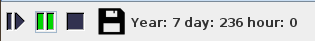

Press to run the simulation. Let’s run it for a couple of simulated years. The simulated time is written down at the bottom of the controller.

If you look at the bathymetry you can see something like this unfolding:
This the “fishing front” behaviour we described in the paper. Basically fish is uniformly distributed but travel is expensive so agents quickly learn to fish near port for maximum profits. However these areas are consumed quickly and fishers fan out away from the port as time goes by.
You can get investigate the effect by looking at the biomass layer to see that areas close to port are indeed depleted: